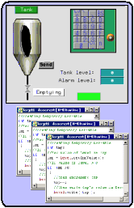
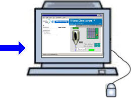
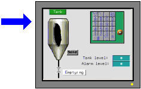

|
|
|
|
|
|
|
|
To use Web Gate, you must define the Publish settings for your project. Publish settings define whether the project's panels, popup windows, and actions are published to Web Gate, HMI Runtime, or both.
|
Panels and Popup Windows  Actions |
Web Gate  |
|
HMI Runtime  |
|
Option |
Description |
|
No Change |
Displays when you make a publishing selection from the Target properties. This option allows you to retain the publishing settings individually defined in the panels, popup windows, and actions. |
|
HMI Runtime |
The defined panels, popup windows, and actions only publish to the target machine's HMI Runtime, and will not be available from Web Gate. |
|
Web Gate |
The defined panels, popup windows, and actions only publish to Web Gate, and will not be available from the HMI Runtime. |
|
All |
The defined panels, popup windows, and actions will publish to both the HMI Runtime and Web Gate. |
To publish a panel to Web Gate:
Display the Panel properties and use the Publish To drop-down list to select Web Gate or All. See Publishing Options for information on the selections.
To publish the Popup window to Web Gate:
Display the popup window properties and use the Publish To drop-down list to select Web Gate or All. See Publishing Options for information on the selections.

When Synchronization is enabled in Web Gate to synchronize Web Gate to a target, a popup window that opens in runtime also opens in Web Gate. When a popup window is moved by a popup script (move, moveOffset) in runtime, the popup window does not move in Web Gate even though Synchronization has been enabled.
To publish actions to Web Gate:
Display the actions properties and use the Publish To drop-down list to select Web Gate or All. See Publishing Options for information on the selections.
You can define the publish settings globally for your target. These settings will apply to the entire project. To define the publish settings globally:
In the Target properties, click the Web Gate Publish property's ellipsis.
Define the Publishing Settings for the Graphical Panels, Popup Panels, and Actions. See Publishing Options for information on the selections.

The global settings override any publishing settings you may have set up for individual panels, popup windows, and actions.
You can define the publish settings for your panel. These settings apply only to the panel. Publishing settings defined globally from the target properties will override any publishing settings defined from the panel.
To define the publish settings from the panel:
In the Panel properties, set the PublishTo property to HMI Runtime, Web Gate, or All. See Publishing Options for information on the selections.